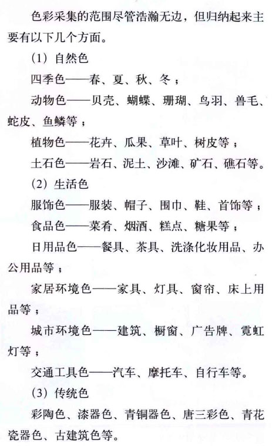

1.对色彩敏感
2.对色彩元素的特性能熟练把握
3.树立全新的色彩设计理念
4.具备色彩设计的创新意识和创造能力
5.具有熟练的调色配色能力和水平
RGB是加色模式
CMY是减色模式
色光混合为加色混合，混合色的总亮度等于混合各色光亮度之和。
色料混合为减色混合，越相混，色彩的明度和纯度越低。
中性混合是生理混色，色彩在进入视觉前没混合，混合是在观看色彩的过程中，在视觉中产生的。生理混色的明度不会增减，是相混色彩明度的平均值。主要有旋转混合和空间混合，效果与加色混合规律相近，但明度为平均值。
光源色 是发光物体发出的光
固有色 反射日光看到的颜色，日光下呈现的颜色
物体色 是物体实际收到光线呈现出来的颜色
环境色 光照对环境照色，进而反射光线对物体色彩产生影响
色光三原色 朱红 蓝紫 翠绿 间色为 紫红 蓝 黄 叠光为白
色料三原色 品红 柠檬黄 湖蓝 间色为 绿 紫 橙 复色为黑灰
彩色系基本色：红橙黄绿青蓝紫，具有色相和色调，色调包含明度和纯度
无彩色系：黑白，以及各种灰色，只有明度，色相和纯度为0
2种色光混合结果为白，则为互补色光
2种颜色按一定比例混合为无彩色的黑、灰，则为互补色
即间色和剩下的原色一一对应：红-绿、黄-紫、蓝-橙
互补色并置，色彩对比最为强烈，提高色彩的鲜明度
互补色相混，色彩出现脏灰，纯度极大降低
明度对比能出现强烈的色彩明暗感，鲜明的色彩层次感
是拉开色彩层次，提高色彩亮度和增加色彩稳定感的重要因素
黑白是最强烈的明度对比
3个色阶内的对比为弱对比 （短调），5个色阶外的对比为强对比（长调），3~5色阶内的对比为中对比（中调）
明度对比分为9个层次，差别不明显，需要细致区分
高/中/低+长/中/短 调
色相对比画面具有强烈色彩感，色彩鲜明生动而饱满
以色环为准
0~15°同类色相 //柔弱，含蓄，朴素，弱对比
30°左右为邻近色相 //柔和，文雅，素静，弱对比
30~60°为类似色相 //和谐，雅致，丰富，弱对比
90°左右为中差色相 //明快，活跃，饱满，中对比
120~150°为对比色相 //醒目，强烈，兴奋，强对比
180°左右为互补色相 //响亮，跳跃，刺激，强对比
色彩的纯净感觉强烈，灰色居多。色彩效果平和含蓄，有高稳度性
高纯度色彩容易使人视觉疲倦，不能持久注视。低纯度色彩柔和含蓄，不引人注目却能持久注视，但平淡久了也容易厌倦
纯净色与含灰色组合配色效果比较好。
纯度为0时，彩色会变为灰色
高纯度色：积极，快乐，活力，强烈，扩张，跳动；
//疯狂，刺激，恐怖，低俗
中纯度色：温和，沉静，中庸
//平淡，消极
低纯度色：自然，简谱，安静，随和，超俗
//悲观，陈旧，含混，乏力
3级内为纯度弱对比
4~6级内为纯度中对比
7~级内为纯度强对比
同样9种等级
鲜/中/灰+强/中/弱对比
低纯度色彩是构成的关键
彩色系冷暖对比突出，易于识别
无彩色系的色彩冷暖在于比较不易识别
红橙使人血液循环加快，蓝绿使人血压循环减慢
冷色偏轻，暖色偏重
冷色湿润，暖色干燥
冷色稀薄，暖色稠密
冷色退远，暖色迫近
冷色透明感强，暖色透明感弱
冷——阴影，透明，镇静，稀薄，空气感，远，轻，少，潮湿，理智，男性，冷静，安静
暖——阳光，不透，刺激，稠密，土质感，近，重，多，干燥，情感，女性，热烈，运动
色相决定冷暖，明度高偏冷，明度低偏暖，纯度高偏冷，纯度低偏暖。黑色，金色偏暖，白色，银色偏冷，灰色居中不稳定
冷暖是比较而言的
大红调入白色，明度提高，纯度降低，转化为偏冷浅红
蓝色调入黑色，明度降低，纯度降低，转化为偏暖深蓝
使不和谐，生硬刺激的色彩组合调整变得和谐统一
使色彩组合符合目的性，构成美的色彩
一味的刺激紧张，一味的暧昧模糊都会让人视觉疲劳
色彩的调和有两层含义 ：
色彩调和是配色美的一种形态，能使人产生愉快，舒适，美感的配色效果。
也是配色美的一种手段。利用调和增减对比，获得和谐统一。
属性统一调和，同色相/明度/纯度调和，无彩色调和四种类型
混入同一调和，混入同一黑/白/灰/彩使对比的色彩具有相同的色素
连贯同一调和，利用中性色黑白灰金银勾画边线将色彩贯穿
使杂乱无章自由散漫的色彩变得有条理，有秩序，获得调和
有条理的组织色彩和构成，可以产生一种韵律美和秩序美
色彩秩序，按照色相的逐渐转移，明度纯度的渐变，色彩冷暖的有序排列
既要保持秩序，也要避免单调
并置排列，色彩按任意线排列设置，等距不限，规则不限
交错组合，两个或者多个图形穿插交错
透叠效果，把图形交错重叠部分变成中间色，透明，轻快，活泼
色彩采集：
培养观察力；拓宽视野，提高审美，加强色彩表现力

整体色按比例重构，抽出典型色彩，按原有色彩关系和比例制作出色标，把色彩按比例整体运用到色彩面貌，能较好反映原物像的色彩情调和美感
不按比例重构/部分色重构/色彩情调重构
色彩联想：
有助于设计思维的快速运转
传达设计思想，便于观众理解
联想建立在经验基础上